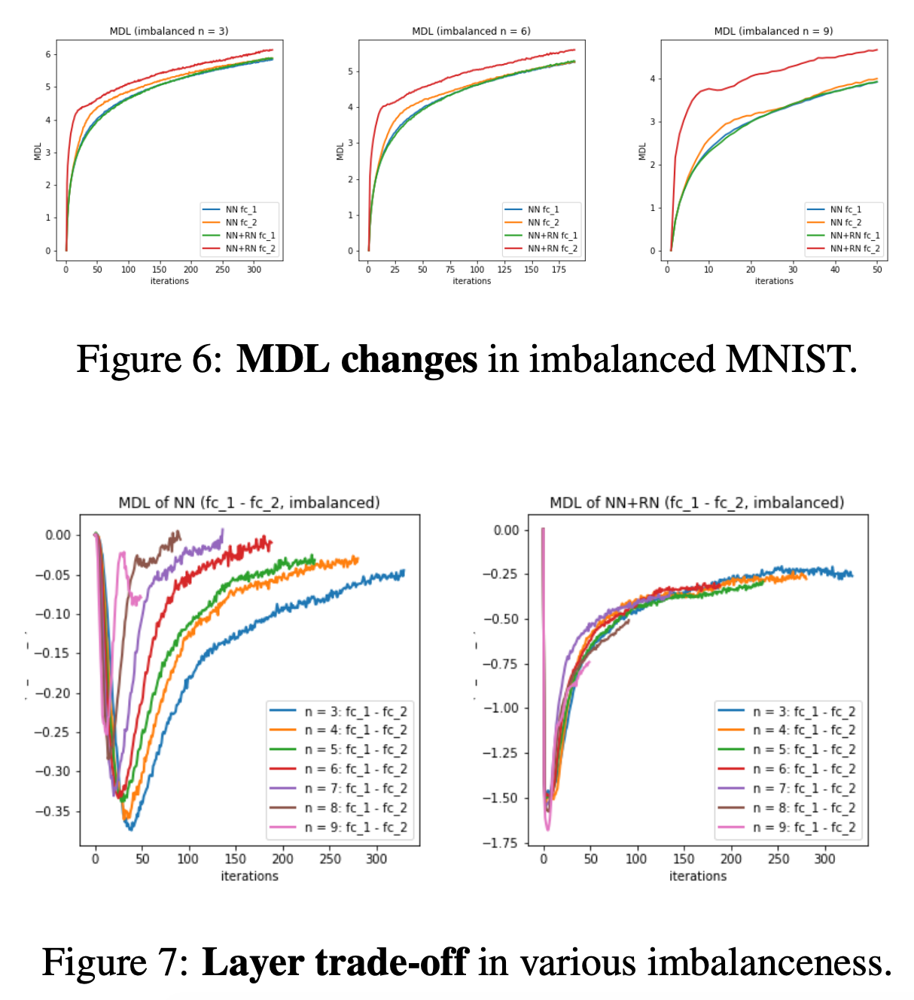

Minimum Description Length of Neural Networks
by Baihan Lin, Columbia University, Feb 2019
GitHub code: https://github.com/doerlbh/UnsupervisedAttentionMechanism
TL;DR
I develop a novel visualization and inference framework to compare human brain data (e.g. neuroimaging, neural recording) with computational models (e.g. neural networks) taking the signal dynamics into account, which can (1) help neuroscientists understand how brain encode and decode information over time, (2) help create better AI algorithms inspired by these discoveries, and (3) help visualize the abstract concept of representations in the brain and identify critical stages in human visual processing.

Abstract
Inspired by the adaptation phenomenon of neuronal firing, we propose an unsupervised attention mechanism (UAM) which computes the statistical regularity in the implicit space of neural networks under the Minimum Description Length (MDL) principle. Treating the neural network optimization process as a partially observable model selection problem, UAM constrained the implicit space by a normalization factor, the universal code length. We compute this universal code incrementally across neural network layers and demonstrated the flexibility to include data priors such as top-down attention and other oracle information. Empirically, our approach outperforms existing normalization methods in tackling limited, imbalanced and nonstationary input distribution in computer vision and reinforcement learning tasks. Lastly, UAM tracks dependency and critical learning stages across layers and recurrent time steps of deep networks.
Publications
[1] Lin, B. (2019). Neural Networks as Model Selection with Incremental MDL Normalization. Human Brain and Artificial Intelligence, (Vol. 1072, pp. 195-209). Springer Nature.
link: https://link.springer.com/chapter/10.1007/978-981-15-1398-5_14
[2] Lin, B. (2019). Unsupervised Attention Mechanism across Neural Network Layers. arXiv preprint arXiv:1902.10658.
link: https://arxiv.org/abs/1902.10658
Neural Networks as a model selection process
Results


Ongoing work
To better understand the perspective I proposed, I am comparing my method with other information theoretical methods such as mutual information. Stay tuned~